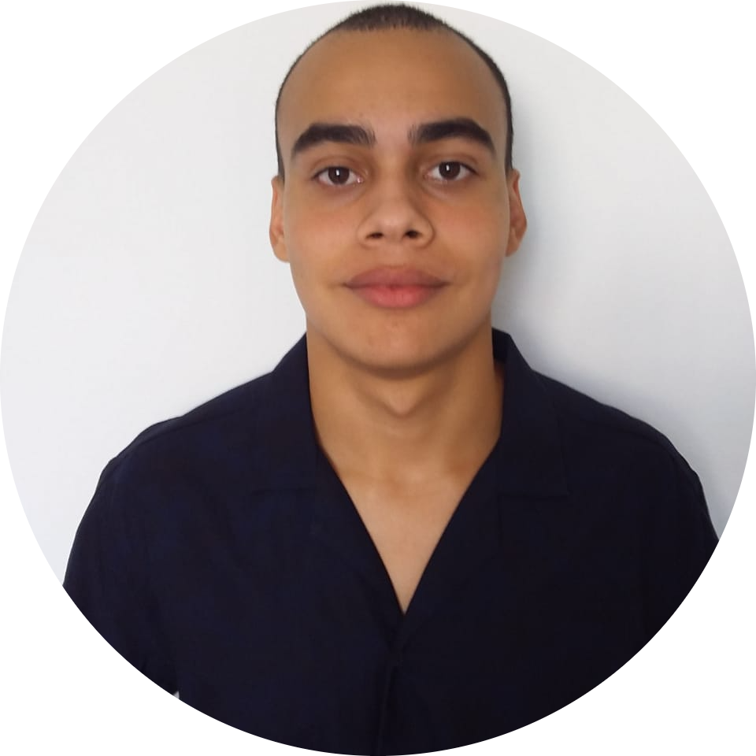

Nome
Lucas Freitas de Melo
Curso
Engenharia de Controle e Automação
Area
Programador

Me chamo Lucas Freitas de Melo, tenho 20 anos e nasci em Itabuna-BA, e quando pequeno vim para Santos-SP.
Quando no ensino médio entrei em um curso de jogos digitais para matar o tempo, lá tive meu primeiro contato com programação e acabei gostando logo de cara, em seguida fui atrás de uma faculdade que pudesse me colocar no mercado voltado a programação, acabei entrando em Engenharia de controle e automação do Instituto Federal SP do campus cubatão.
Hoje em dia faço alguns cursos com objetivo de aperfeiçoar na área e melhorar minha carreira como programador.